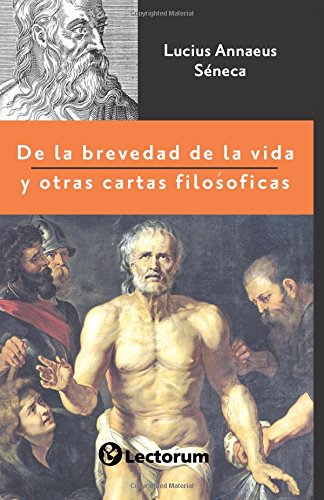

► Que es la filosofia
filosofía occidental ha influido sobre otras ramas del conocimiento humano, por ejemplo, en el ámbito de la ciencia, la religión y la política. Esta superposición entre disciplinas se debe a que la filosofía es una disciplina muy amplia. En el siglo xix, el crecimiento de las universidades de investigación modernas llevó a la filosofía académica y otras disciplinas a profesionalizarse y especializarse. Desde entonces, varias áreas de investigación que tradicionalmente formaban parte de la filosofía se han convertido en disciplinas académicas separadas, como la psicología, la sociología, la biología, la lingüística y la economía. Fuente
► Tipos de filosofias ◄
• Metafísica: es la rama rama de la filosofia que estudia la naturaleza, estructura, componentes y principios fundamentales de la realidad.
• Gnoseología: es la rama de la filosofía que estudia la posibilidad, el origen o medios, la naturaleza o esencia, y la fenomenología del conocimiento.
• Epistemología: es la rama de la filosofía que estudia el conocimiento científico, su naturaleza, posibilidad, alcance y fundamentos.
• Logica: es una rama de la filosofía que estudia los principios de la demostración y la inferencia válida, las falacias, las paradojas y la noción de verdad.
• Etica: es la rama de la filosofía que estudia la conducta humana, lo correcto y lo incorrecto, lo bueno y lo malo, la moral, el buen vivir, la virtud, la felicidad y el deber.
• Estética: es la rama de la filosofía que estudia la esencia y la percepción de la belleza y el arte.
• Política: La filosofía política es la rama de la filosofía que estudia cómo debería ser la relación entre las personas y la sociedad,63 e incluye cuestiones fundamentales acerca del gobierno, la política, las leyes, la libertad, la igualdad, la justicia, la propiedad, los derechos y el poder político.
• Lenguaje: es la rama de la filosofía que estudia el lenguaje en sus aspectos más generales y fundamentales, como la naturaleza del significado y de la referencia, la relación entre el lenguaje, el pensamiento y el mundo, el uso del lenguaje (o pragmática), la interpretación, la traducción y los límites del lenguaje.
• Mente: es la rama de la filosofía que estudia la mente, incluyendo las percepciones, sensaciones, emociones, fantasías, sueños, pensamientos y creencias.
• Naturaleza: a veces llamada filosofía natural o cosmología fue el estudio filosófico de la naturaleza y el universo físico que era dominante antes del desarrollo de la ciencia moderna.
• Ciencia: es la rama de la filosofía que investiga el conocimiento científico y la práctica científica.
• Religión: es una rama de la filosofía que tiene por objeto de estudio a la religión, la espiritualidad, como una manifestación humana consciente y reflexiva sobre el sentido trascendente de la existencia y el mundo.
► Libros mas importantes de filosofia
| # | Libro | Imagen | Resumen |
|---|---|---|---|
| 1 | Discuro del metodo | El Discurso del método para dirigir bien la razón y buscar la verdad en las ciencias (tal es su título completo) no es solamente la obra fundamental del filósofo francés René Descartes; ha sido juzgada además como el hito que marca el final de la escolástica y el inicio de la filosofía moderna. El Discurso del método fue publicado anónimamente por primera vez en Leiden en 1637; en aquella primera edición venía a ser el prólogo de los tres tratados científicos contenidos en el libro (La dióptrica, Los meteoros y La geometría), y, de hecho, no se publicó de forma independiente de los tratados hasta el siglo XIX. Fuente |
|
| 2 | Tao Te Ching | Referido también como Dào Dé Jīng o Tao Te King, es un escrito ancestral de China. De su nombre puede inferirse su desarrollo; pues Dào significa “el camino”, dé simboliza “poder” o “virtud” y jīng se refiere a “libro clásico”. De acuerdo con la tradición china, fue elaborado durante el siglo VI a. C por Laozi archivista de la dinastía Zhou. Sin embargo, muchos académicos ponen en duda la autoría y antigüedad de este texto. Por otra parte, los enunciados del Tao Te Ching sentaron la mayoría de los cánones del taoísmo filosófico. Por consiguiente, este manuscrito influenció notablemente sobre otras disciplinas o escuelas espirituales del continente asiático (el neoconfucianismo y el legalismo, por ejemplo). Fuente |
|
| 3 | De la brevedad de la vida |  | De brevitate vitae fue uno de los textos que conformaron Diálogos, el libro del filósofo Séneca dedicado a Paulino. En la obra, el autor alega que la vida —a pesar de aparentarlo— no es corta; es la persona quien produce esa percepción al no saber sacarle provecho. Por ello, los historiadores señalan al pensador romano como una referencia inequívoca para los autores del Siglo de Oro español. Fuente |
| 4 | Así habló Zaratustra | Es considerada la obra maestra de Friedrich Nietzsche. Así habló Zaratustra. Un libro para todos y para nadie (título completo) explora las principales ideas del filósofo germano. Esos pensamientos están plasmados en una secuencia de relatos y ensayos líricos que colocan el foco en las vivencias y reflexiones del profeta Zaratustra (el Zoroastro de los persas). Fuente |